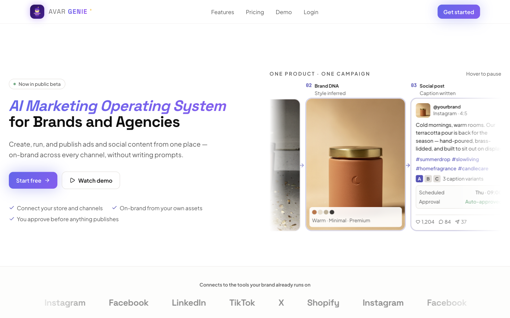
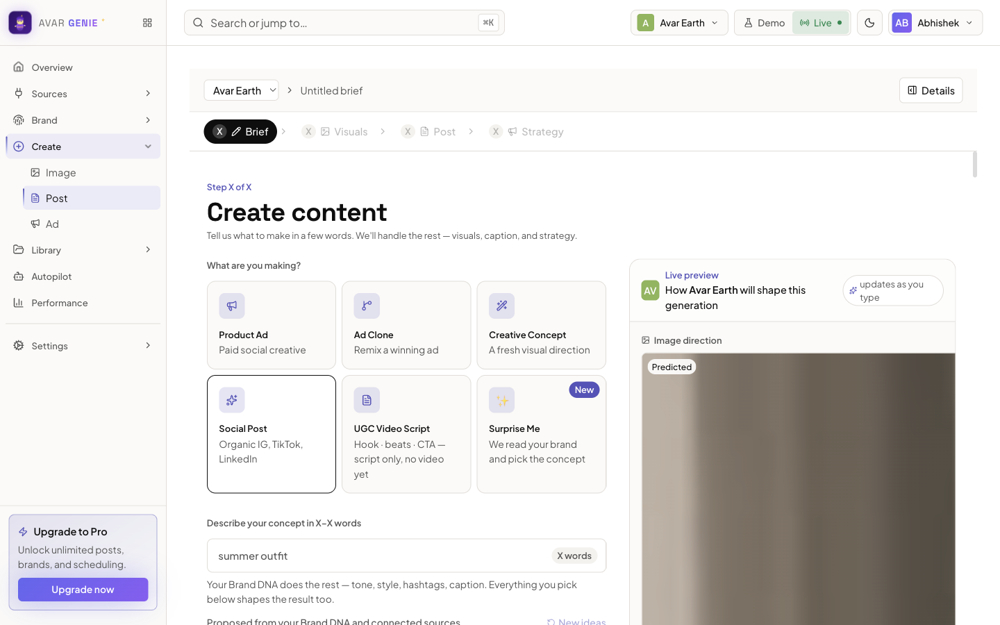
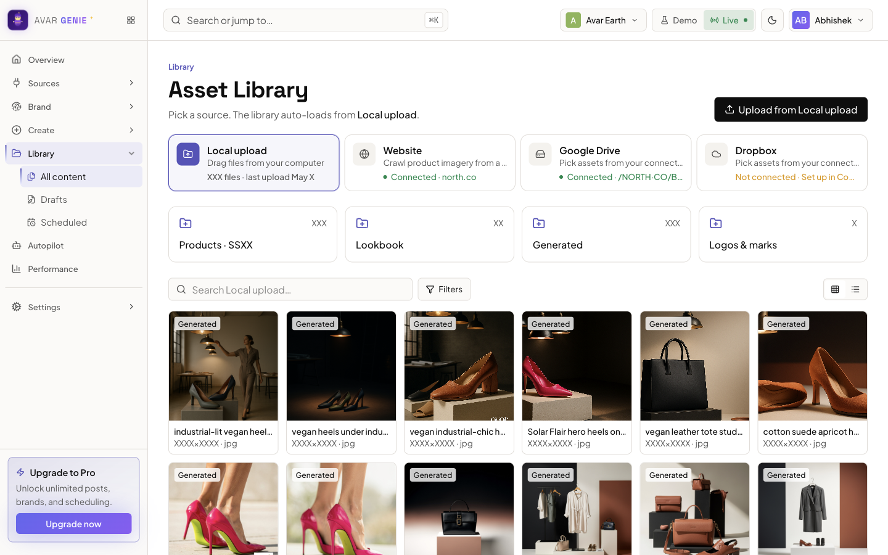
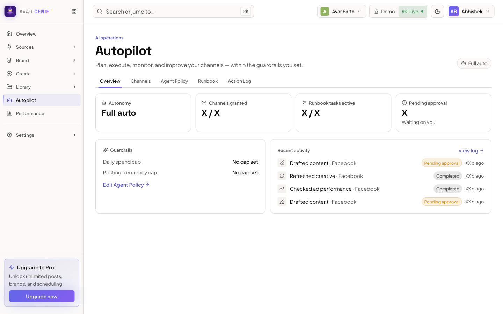
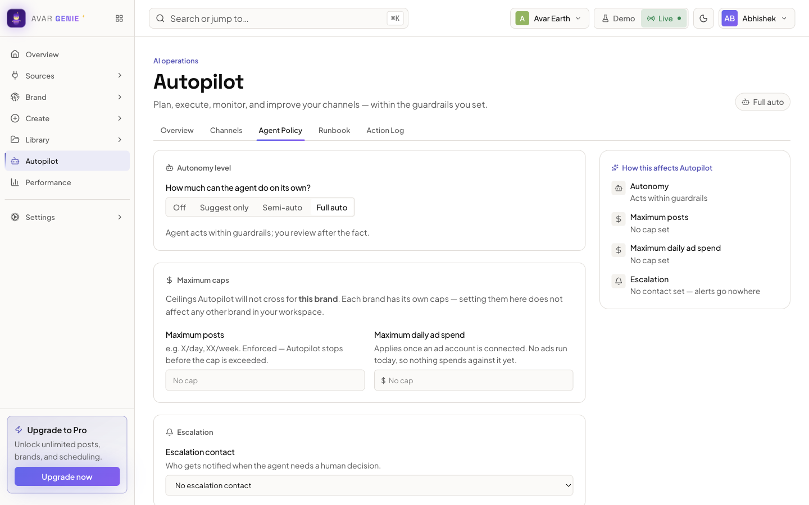
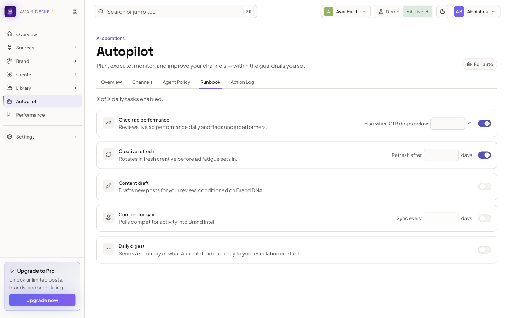
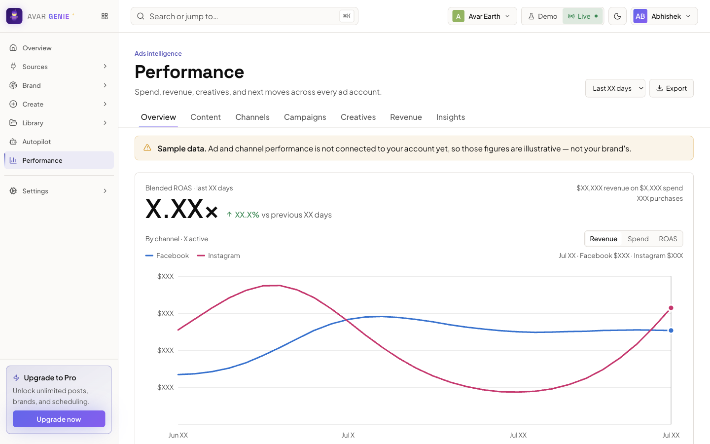
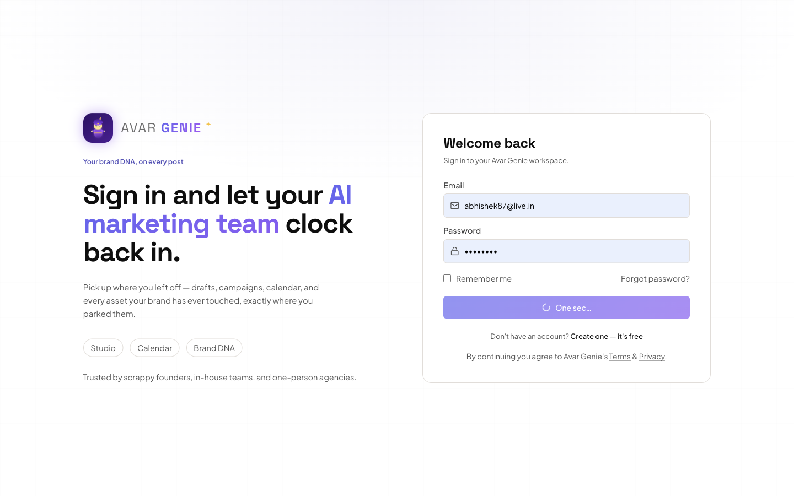

AI marketing platform · work in progress
Avar Genie
An AI marketing platform that lets brand owners run their social media and ads without knowing how to write prompts.
Brand owners juggle tools, agencies and prompt-writing just to stay visible, and none of those fix it. Running social and paid ads well means knowing what to post, how to phrase it for each channel, where to put budget and how to read results beyond vanity metrics. I am building Avar Genie (now in public beta, work in progress) so a brand owner can go from a raw photo to published, on-brand posts and budgeted ads without writing a single prompt.
- Brand DNA first: builds a profile of the brand from its website, visuals, tone and audience, so every post, ad, image and caption stays consistent across channels.
- From brief to publish without prompts: start from a logo, a website or a blank canvas, and Genie fills in the rest.
- One product, one campaign: a raw product photo becomes social posts with caption variants and targeted, budgeted ad variants.
- Autopilot within guardrails: the owner sets the autonomy level, spend and posting caps and an escalation contact. Nothing publishes without approval unless the owner allows it.
- Reads past vanity metrics: reports profit rather than clicks, then recommends where to move budget next.
Live capture of the logged-in app. Figures were masked with “X” in the page before the screenshot was taken.
-

01The public landing page: an AI marketing operating system for brands and agencies. -

02Inside the app, the command center for one brand: items in review, live channels, autopilot mode and credits, with Ask Genie answering from the brand’s own data. -

03Create: pick a format, describe the concept in a few words, and a live preview shows how the brand’s DNA will shape the result. -

04The asset library pulls from local uploads, the brand’s website and cloud drives, next to everything Genie has generated. -

05Autopilot runs the channels within guardrails: autonomy level, granted channels, runbook tasks and anything waiting for approval. -

06Agent policy sets how much the agent can do alone (off, suggest, semi-auto or full auto), plus spend and posting caps and an escalation contact. -

07The runbook: the daily tasks the agent performs, each switched on individually with its own threshold. -

08Performance across ad accounts: ROAS, spend and revenue by channel. The app labels this as sample data until an ad account is connected. -

09The full landing page.
{kind=link}
{kind=link}
{kind=link}
{kind=link}
{kind=link}
{kind=link}
{kind=link}
{kind=link}